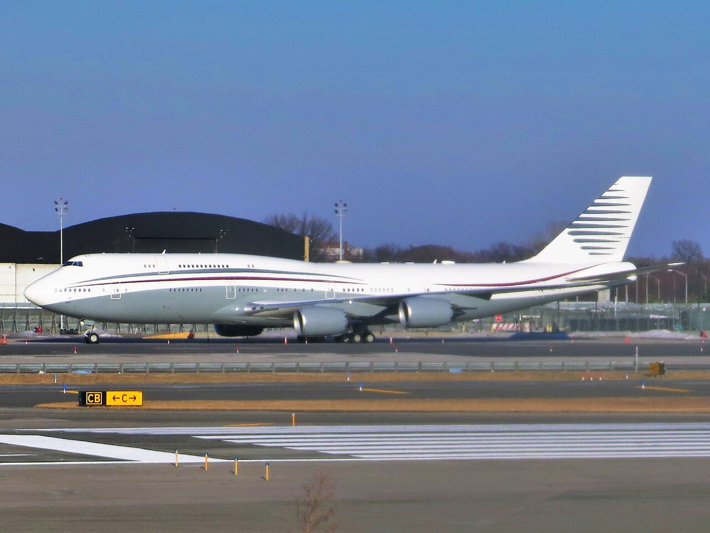

GRIEVANCE XXXI ◆ PUBLIC TRUST
He has welcomed extravagant favors from foreign powers while exercising the authority to negotiate with them.
THE RECORD SHOWS
The administration’s plan to accept a luxury Boeing 747 from Qatar raised bipartisan constitutional, security, and conflict-of-interest concerns.

The proposed arrangement would place a high-value foreign-government aircraft into U.S. government service. Trump defended it as a transparent gift to the Defense Department, rather than to him personally. Critics questioned the Emoluments Clause, the costs of modification, security, and whether a foreign power should provide a presidential aircraft. The existence of concerns is established; an unlawful personal payment has not been proved here.
A DOCUMENTED SEQUENCE
3 MILESTONES- May 2025The White House indicated an intention to accept a luxury Boeing 747-8 offered by Qatar for use as a presidential aircraft.
- May 2025Democrats and some Republicans raised questions about constitutional limits, security requirements, and foreign influence.
- 2025–26Debate continued over ownership, costs, and eventual disposition of the aircraft.